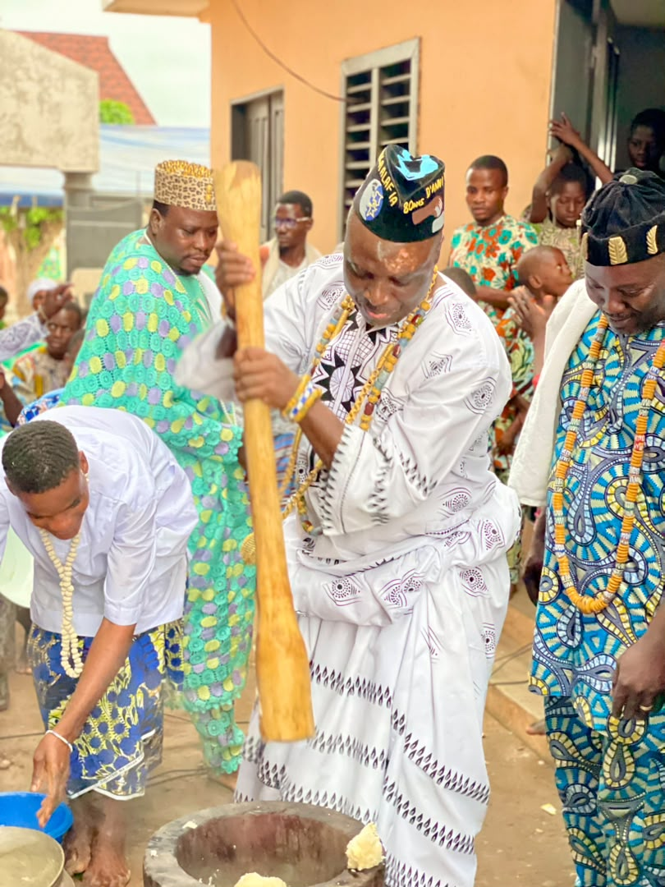

HOUNNONGAN XÔSSU
MITÔ DAHO
ATCHÈTONDJI DJRADO II
AHIDAZAN AZANSIEN
Président du Comité Supérieur Mondial et Guide Suprême de culte
HWENDONAFA THRON KPÉTO DÉKA ALAFIA
Grand Prêtre Vodun · Médecin Traditionnel
Grand Agriculteur · Formateur
Une Vie au Service des Ancêtres

Un héritage sacré
Successeur de son père HOUNNONGAN XÔSSU MITÔ DAHO DJRADO AHIDAZAN AZANSIEN, Sa Majesté perpétue les traditions ancestrales du Vodun depuis son intronisation en 2015. Installé à Tohonou Tchiakpècodji (Ouidah), il consacre sa vie à la guérison, la protection et la guidance spirituelle. En tant que Médecin Traditionnel reconnu, il allie savoir ancestral et accompagnement global.
Lire son histoireDes Dons à Votre Portée
Quelques Moments


Explication de la Grande Cérémonie d'Agounssisso

EXPLICATION DE LA GRANDE CÉRÉMONIE D'AGOUNSSISSO DANS LA COMMUNAUTÉ THRON
Au sein de la communauté THRON, la cérémonie d'AGOUNSSISSO est un rituel ancestral. Ce rituel a été instauré il y a plusieurs années par HOUNNONGAN PAPA DJRADO AHIDAZAN AZANSIEN.
Il s'agit d'un rituel puissant mais qui est rarement pratiqué. L'initiateur ne le fait que tous les 3 ans, 7 ans, ou selon les circonstances. La fréquence dépend de l'intensité des attaques des ennemis.
La portée d'AGOUNSSISSO est grande :
Une fois ce rituel accompli, tous ceux qui vous veulent du mal sont neutralisés. Celui qui le fait obtient la paix, la santé, la prospérité, la longévité et l'abondance.
Aujourd'hui, en réponse à l'appel de l'État béninois qui nous demande de valoriser notre culture et les rites de notre VODOUN, Sa Majesté Hounnongan Hossou Mitodaho Atchètondji Djrado II Ahidazan Azansien a décidé de nous révéler le secret de ce rituel sacré qu'accomplissait Hounnongan Hossou Papa Djrado.
Dans cette dynamique de retour à l'authenticité, et pour nous démarquer des pratiques empruntées à d'autres religions, il a été décidé que :
À partir d'aujourd'hui, nous ne célébrerons plus la cérémonie de LEYA qui se tenait après le carême, et nous ne ferons plus le carême aux mêmes jours que les musulmans.
Nous appelons donc tous les adeptes, tous les Hounnon et Hounnongan à se conformer à ce nouveau rite qui nous ramène à la source de notre tradition.
Vive la communauté THRON
Vive la communauté THRON HWENDONAFA
Vive l'ASNADES THRON
Vive le Comité des Rites du Vodoun du Bénin
Vive le Bénin
Prêt à Changer Votre Vie ?
Contactez directement Sa Majesté par téléphone ou WhatsApp.
Page Contact Complète